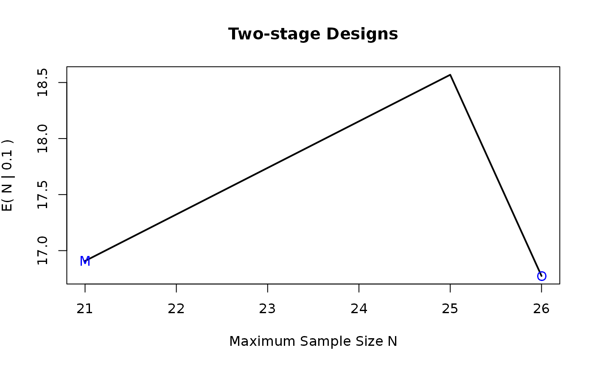

sargent2stage.RdThis function calculates sample sizes of the sargent 2-stage design.
sargent2stage(p0, pa, alpha, beta, eta, pi, eps = 0.005, N_min, N_max, admissible = c("chull", "CHull"), ...)
| p0 | probability of the uninteresting response (null hypothesis \(H0\)) |
|---|---|
| pa | probability of the interesting response (alternative hypothesis Ha) |
| alpha | Type I error rate \(P(reject H0|H0)\) |
| beta | Type II error rate \(P(reject Ha|Ha)\) |
| eta | \(P(reject Ha|H0)\) |
| pi | \(P(reject H0|Ha)\) |
| eps | tolerance default value = 0.005 |
| N_min | minimum sample size value for grid search |
| N_max | maximum sample size value for grid search |
| admissible | character string indicating how to compute admissible designs, either 'chull' or 'CHull', the former uses grDevices::chull, the latter uses multichull::CHull |
| ... | arguments passed on to plot in case admissible is set to CHull |
a data.frame with elements
n1: total number of patients in stage1
n2: total number of patients in stage2
N: total number of patients=n1+n2
r1: critical value for the first stage
r2: critical value for the second stage
EN.p0: expected sample size under H0
PET.p0: probability of terminating the trial at the end of the first stage under H0
MIN: column indicating if the design is the minimal design
OPT: column indicating if the setting is the optimal design
ADMISS: column indicating if the setting is the admissible design
alpha: the actual alpha value which is smaller than alpha_param + eps
beta: the actual beta value where which is smaller than beta_param + eps
eta: the actual eta value which is smaller than eta_param - eps
pi: the actual pi value which is smaller than pi_param - eps
lambda: 1-(eta+alpha)
delta: 1-(beta+pi)
p0: your provided p0 value
pa: your provided pa value
alpha_param: your provided alpha value
beta_param: your provided beta value
eta_param: your provided eta value
pi_param: your provided pi value
if x1<=r1 --> stop futility
if (x1+x2)<=r --> futility
if (x1+x2)>=s --> efficacy
Sargent DJ, Chan V, Goldberg RM. A three-outcome design for phase II clinical trials. Control Clin Trials. 2001;22(2):117-125. doi:10.1016/s0197-2456(00)00115-x
samplesize <- sargent2stage(p0 = 0.1, pa = 0.3, alpha = 0.05, beta = 0.1, eta = 0.8, pi = 0.8, eps = 0.005, N_min = 15, N_max = 30) plot(samplesize)# \donttest{ data(data_sargent2) test <- data_sargent2 samplesize <- sargent2stage(p0 = test$p0, pa = test$pa, alpha = test$alpha, beta = test$beta, eta = test$eta, pi = test$pi, eps = 0.005, N_min = test$N_min, N_max = test$N_max)#> Error in sargent2stage.default(p0 = null, pa = alternative, alpha = alpha, beta = beta, eta = eta, pi = pi, eps = eps, N_min = N_min, N_max = N_max, admissible = admissible, ...): formal argument "admissible" matched by multiple actual arguments#> Error in subset.default(x, OPT == "Optimal"): object 'OPT' not found#> Error in data.table::rbindlist(optimal): object 'optimal' not found#> Error in subset.default(x, MIN == "Minimax"): object 'MIN' not found#> Error in data.table::rbindlist(minimax): object 'minimax' not found# }